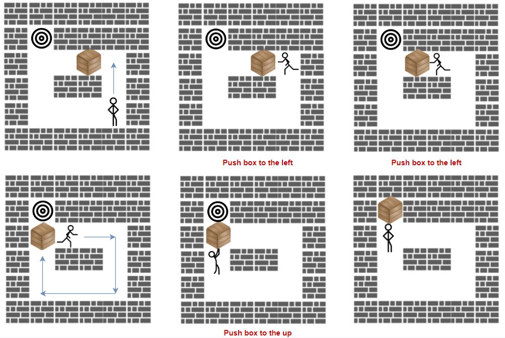

1263. 推箱子
BFS 状态 = (人, 箱)：一层就是推一次；扩展前先用一次内部 BFS 确认人能绕到箱子背面。
思路
- 只数「推动」次数：把 (人的位置，箱子的位置) 整体当 BFS 状态，一层对应推动一次。
- 想沿方向
d推箱子：人必须先站到箱子背面箱−d。把箱子当墙做一次内部 BFS 判断人能否绕过去。 - 推得动则转移到
(旧箱位, 箱+d)，人补到箱子原来的位置；箱子首次到T的层数即答案，队列空返回-1。 - 状态数 ≤
(mn)²，mn ≤ 400，加 visited 去重后完全跑得动。
图解
最优解
1import java.util.*;2 3class Solution {4 public int minPushBox(char[][] grid) {5 int m = grid.length, n = grid[0].length;6 int p = 0, b = 0, t = 0;7 for (int r = 0; r < m; r++)8 for (int c = 0; c < n; c++) {9 if (grid[r][c] == 'S') p = r * n + c;10 else if (grid[r][c] == 'B') b = r * n + c;11 else if (grid[r][c] == 'T') t = r * n + c;12 }13 // BFS 状态 = (人, 箱)：一层 = 推一次；箱子首次到 T 的层数就是最少推动数14 boolean[][] seen = new boolean[m * n][m * n];15 ArrayDeque<int[]> q = new ArrayDeque<>();16 q.add(new int[]{p, b});17 seen[p][b] = true;18 int[][] DIRS = {{1, 0}, {-1, 0}, {0, 1}, {0, -1}};19 for (int pushes = 0; !q.isEmpty(); pushes++) {20 for (int k = q.size(); k > 0; k--) {21 int[] cur = q.poll();22 int br = cur[1] / n, bc = cur[1] % n;23 if (cur[1] == t) return pushes;24 for (int[] d : DIRS) {25 // 人要站到 (br-d, bc-d) 把箱子沿 d 推进 (br+d, bc+d)，人补位到旧箱位26 int sr = br - d[0], sc = bc - d[1], tr = br + d[0], tc = bc + d[1];27 if (sr < 0 || sr >= m || sc < 0 || sc >= n) continue;28 if (tr < 0 || tr >= m || tc < 0 || tc >= n || grid[tr][tc] == '#') continue;29 int nb = tr * n + tc;30 if (seen[cur[1]][nb]) continue;31 // 人能绕到推击位（把箱子当墙）才推得动32 if (walk(grid, cur[0], sr * n + sc, cur[1])) {33 seen[cur[1]][nb] = true;34 q.add(new int[]{cur[1], nb});35 }36 }37 }38 }39 return -1;40 }41 42 // 人能否从 p 走到 to：把箱子 box 当墙，'#' 也是墙43 private boolean walk(char[][] grid, int p, int to, int box) {44 int m = grid.length, n = grid[0].length;45 boolean[] vis = new boolean[m * n];46 int[] q = new int[m * n];47 int head = 0, tail = 0;48 vis[p] = true;49 q[tail++] = p;50 while (head < tail) {51 int cur = q[head++];52 if (cur == to) return true;53 int r = cur / n, c = cur % n;54 int[] dr = {1, -1, 0, 0}, dc = {0, 0, 1, -1};55 for (int d = 0; d < 4; d++) {56 int nr = r + dr[d], nc = c + dc[d];57 if (nr < 0 || nr >= m || nc < 0 || nc >= n) continue;58 int next = nr * n + nc;59 if (vis[next] || grid[nr][nc] == '#' || next == box) continue;60 vis[next] = true;61 q[tail++] = next;62 }63 }64 return false;65 }66}题目
「推箱子」是一款风靡全球的益智小游戏，玩家需要将箱子推到仓库中的目标位置。
游戏地图用大小为 m x n 的网格 grid 表示，其中每个元素可以是墙、地板或者是箱子。
现在你将作为玩家参与游戏，按规则将箱子 'B' 移动到目标位置 'T' ：
- 玩家用字符
'S'表示，只要他在地板上，就可以在网格中向上、下、左、右四个方向移动。 - 地板用字符
'.'表示，意味着可以自由行走。 - 墙用字符
'#'表示，意味着障碍物，不能通行。 - 箱子仅有一个，用字符
'B'表示。相应地，网格上有一个目标位置'T'。 - 玩家需要站在箱子旁边，然后沿着箱子的方向进行移动，此时箱子会被移动到相邻的地板单元格。记作一次「推动」。
- 玩家无法越过箱子。
返回将箱子推到目标位置的最小 推动 次数，如果无法做到，请返回 -1。
示例 1：

输入：grid = [["#","#","#","#","#","#"],
["#","T","#","#","#","#"],
["#",".",".","B",".","#"],
["#",".","#","#",".","#"],
["#",".",".",".","S","#"],
["#","#","#","#","#","#"]]
输出：3
解释：我们只需要返回推箱子的次数。
示例 2：
输入：grid = [["#","#","#","#","#","#"],
["#","T","#","#","#","#"],
["#",".",".","B",".","#"],
["#","#","#","#",".","#"],
["#",".",".",".","S","#"],
["#","#","#","#","#","#"]]
输出：-1
示例 3：
输入：grid = [["#","#","#","#","#","#"], ["#","T",".",".","#","#"], ["#",".","#","B",".","#"], ["#",".",".",".",".","#"], ["#",".",".",".","S","#"], ["#","#","#","#","#","#"]] 输出：5 解释：向下、向左、向左、向上再向上。
提示：
m == grid.lengthn == grid[i].length1 <= m, n <= 20grid仅包含字符'.','#','S','T', 以及'B'。grid中'S','B'和'T'各只能出现一个。
题面取自力扣当前版本。
数据快照 2026-11-04。题面版权归力扣所有，本站点仅供本人学习使用，请勿对外发布。